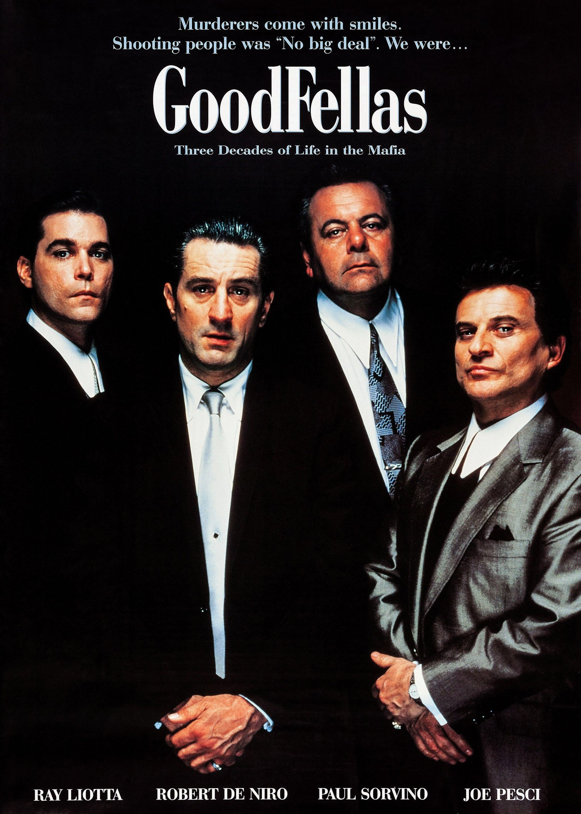

What is Culture Club and what do we do?
Culture club is a club by and for intellectual individuals.
We gather every two weeks on friday night,
when we participate in cultural activities, eg; watching and debating movies while eating italian pasta and drinking red wine.
Or watching a great movie and playing chess afterwards, with or without a cigar and a glass of japanese whiskey.
Club members pay a monthly fee, so we can offer the highest standard of:service, food, and accomodation.
We ask our members to attend our gatherings in formal attire, because the first step of feeling good is looking classy.

We condone things like;
-Tax fraud
-Invading Poland
-Betraying Stalin
-Dressing in formal attire
we strive for excellence and nothing less.
Who is not allowed to join Culture Club?
-Women
-Lgbtq patients
-Leftist people
-Niggers